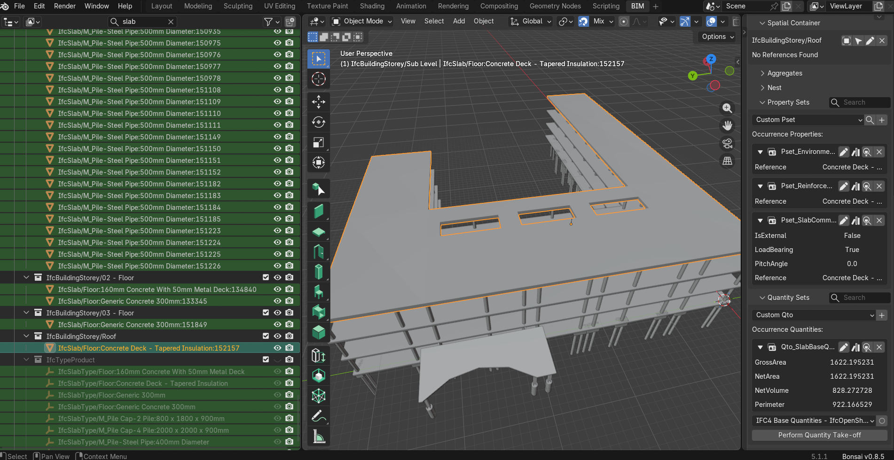
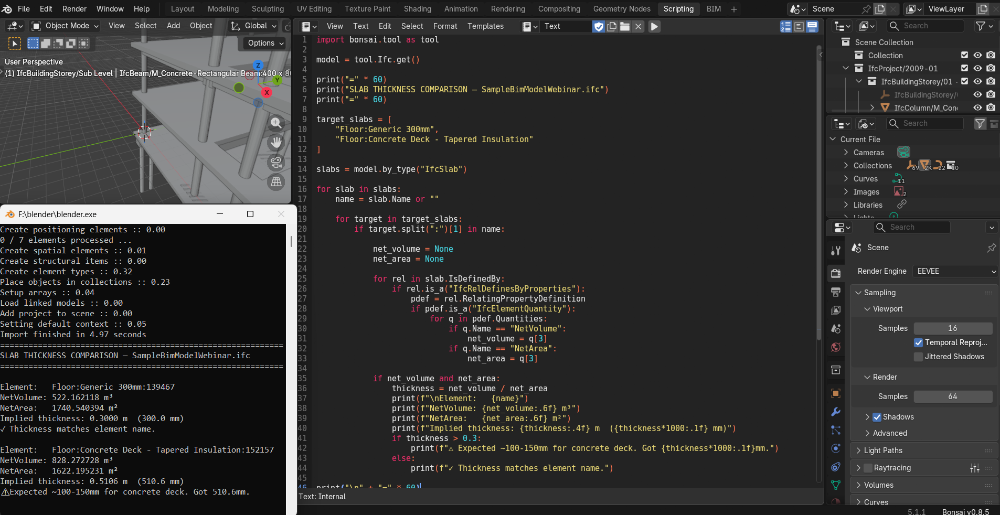
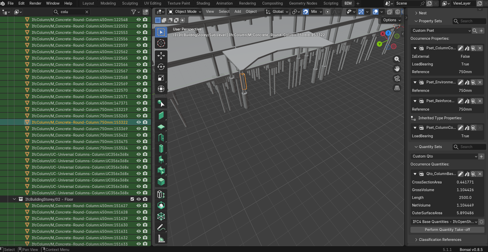
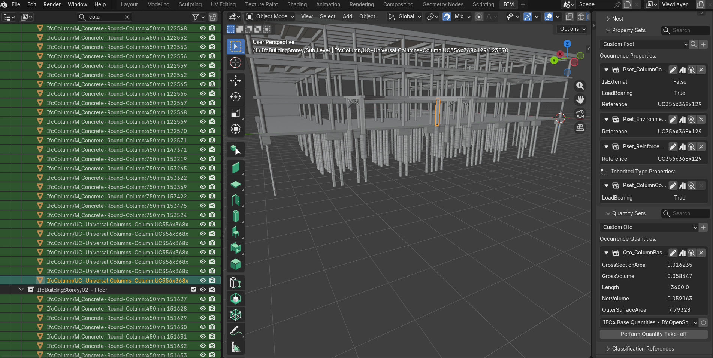
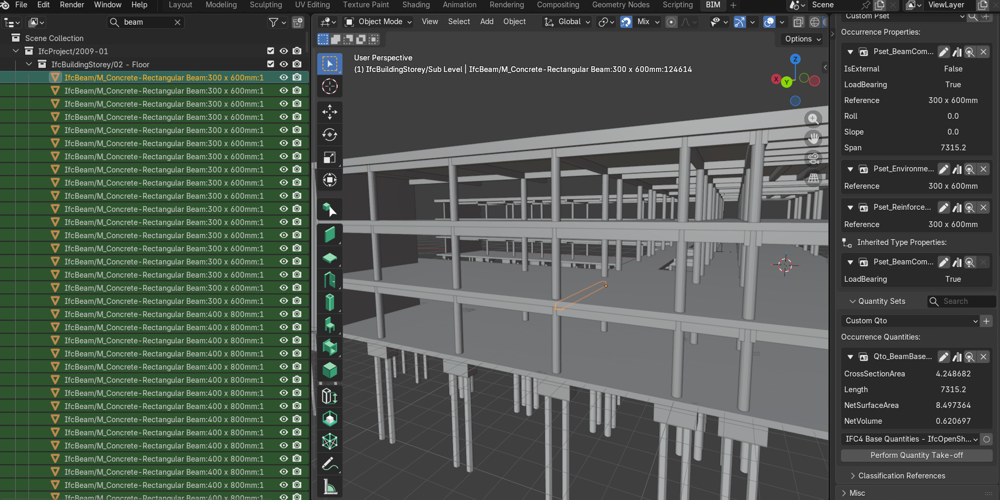
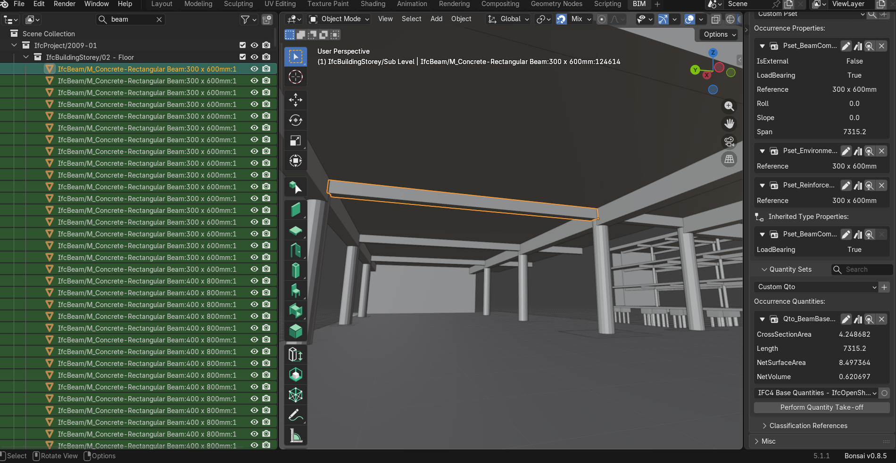
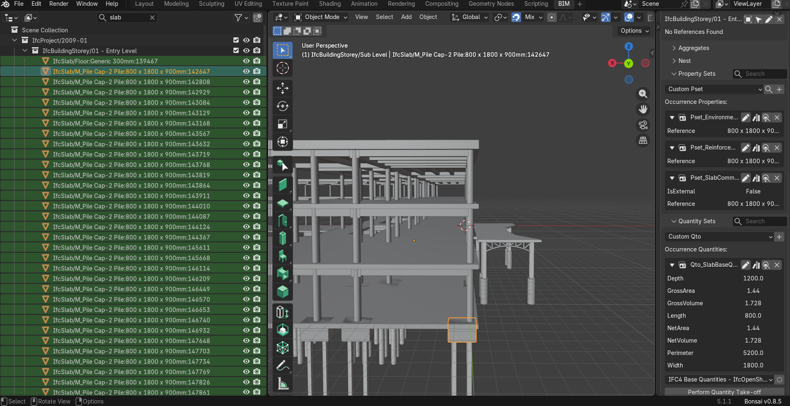
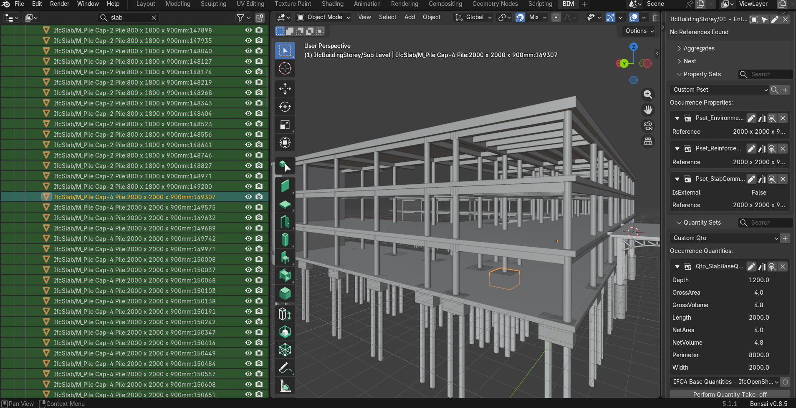

This is a production-scale model containing a mixed RC frame, steel roof trusses, and a piled foundation system. 905 elements processed — 641 concrete structural elements, 263 non-concrete excluded.
At this scale, errors no longer appear as obvious outliers. They are embedded in composite material definitions, mixed structural systems, naming conventions that appear consistent but diverge from geometry, and partial or implicit quantity definitions. Four findings. Each one silent without validation.
- 905 total elements processed
- 641 concrete structural elements
- 2,290.912 m³ total concrete volume
- 196 concrete columns (189 × 450mm, 7 × 750mm)
- 357 concrete beams — multiple sections
- 78 concrete pile caps
- 216 steel pipe piles — excluded
- 1 composite slab — 828.272 m³ — flagged for QS review
- 11 IfcReinforcingBar — 176.1 kg exact
One floor slab — "Floor — Concrete Deck — Tapered Insulation" — contains an IfcMaterialConstituentSet with rigid insulation and cast-in-place concrete (28 MPa). No material fractions are defined. The IFC provides no deterministic split between materials.
Excluded from concrete BOQ and flagged for QS review. The IFC does not contain incorrect data — it contains inseparable combined material representation.


Seven UC356×368×129 columns contain no explicit material definition — no material name, assignment, or reference Pset classification. Classification derived from cross-sectional geometry signal: the order-of-magnitude difference between steel and concrete sections provides reliable structural classification even without material metadata.
All seven correctly excluded from concrete BOQ.


One 300 × 600mm concrete beam spanning 7.3m: theoretical solid volume 1.317 m³, IFC NetVolume 0.621 m³ — a 53% reduction caused by slab-beam intersection handling during Revit export. Revit removes intersecting volumes from beam elements and retains them in slab elements to prevent double counting. The IFC represents net constructible volume, not theoretical solid extrusion. NetVolume used directly.


One pile cap labeled "800 × 1800 × 900mm" — name indicates 900mm depth, BaseQuantities confirms 1200mm geometry. Four perimeter pile caps trimmed by site boundary conditions; actual modeled volumes differ from nominal naming dimensions. A name-based takeoff would overestimate pile cap concrete by 1.137 m³ across the set.
Pipeline relies exclusively on BaseQuantities-derived geometry.


641 concrete elements validated against IFC BaseQuantities in Bonsai/BlenderBIM. No structural quantity discrepancies identified. All quantities derived directly from IFC data sources. Zero geometric fallback required.
The composite slab containing insulation and concrete cannot be decomposed into individual material quantities due to missing fraction data. Combined volume 828.272 m³ — estimated concrete portion 200–245 m³ — must be confirmed via structural drawings and QS interpretation. Wall reinforcement is not modeled; only explicitly defined rebar is included.
At production scale, IFC errors do not appear as failures. They appear as plausible outputs. Insulation behaves like concrete in composite slabs. Steel elements appear structurally identical without material tags. Beam volumes reflect export logic rather than geometry intent. Pile cap names diverge from modeled geometry.
None of these trigger extraction errors — they propagate silently into BOQs, cost plans, and reinforcement schedules. The critical skill is not reading IFC data — it is distinguishing between what is explicitly defined, what is inferred, and what is structurally absent.